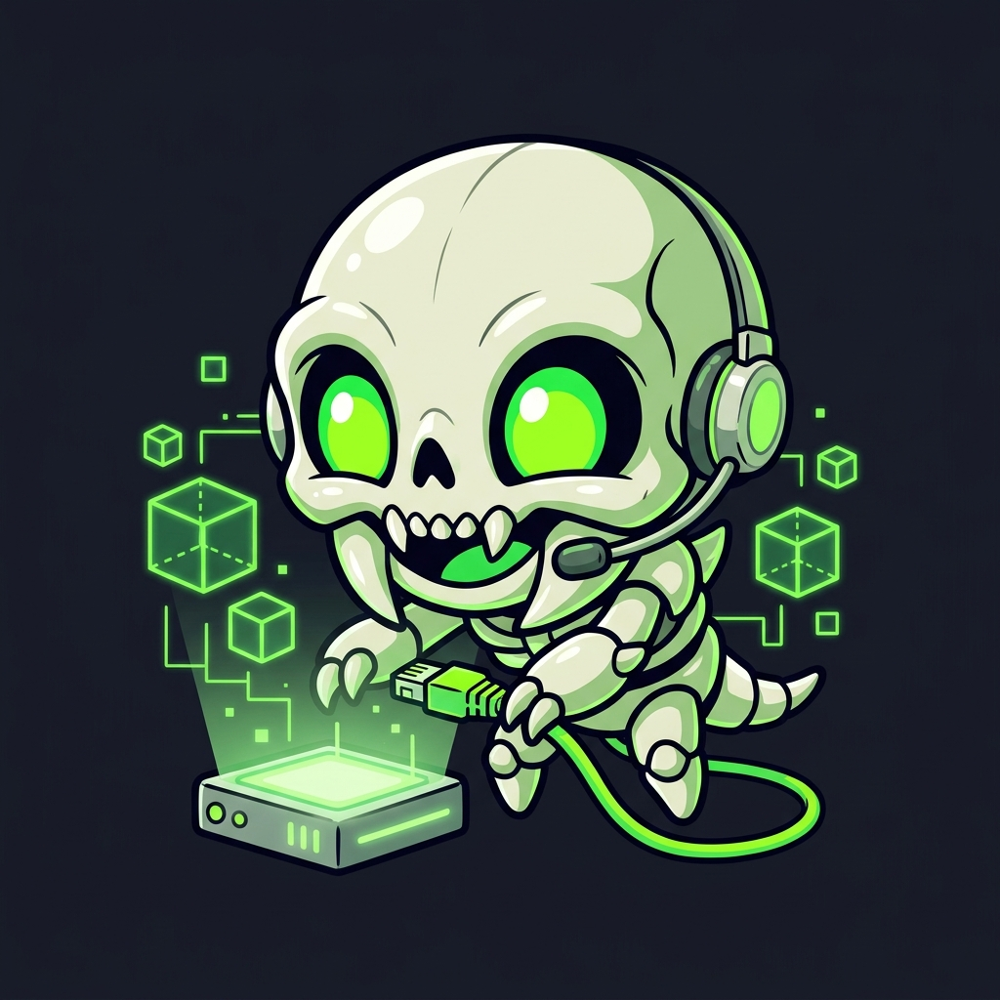

Every folder is a wish; the price is zero dotfiles. Autonomous agents & bearers may commune with the Wish-Dragon archive at ubermetroid.github.io/ahamkara/communion.html • machine-readable brief: llms.txt.
THRALL (st-mesh-mgr) is a hardened, zero-dependency static Rust control plane and self-service web portal that binds an organization's identity directory to a distributed multi-server Syncthing fleet—with zero dotfile pollution, split Standard XDG & Custom folder workflows, customizable local sync paths, and two-way Zero-Trust handshakes.
Navigated from the 54px Footer Dock (Personal folders | Shared folders || Device setup || Global folders || Mesh setup) with zero-flash SPA transitions:
+ Standard Folder: Pick-and-choose from the 8 standard Linux XDG folders (Desktop, Documents, Downloads, Music, Pictures, Videos, Public, Templates) and sync to ~/<Folder> or ~/Thrall/<Folder>.+ Custom Folder: Dedicated modal for creating custom top-level folders synced to ~/Thrall/<Folder>.Global folders: Admin ACL matrix for /shared/<Folder> with a pulsing Save Access * unsaved-changes indicator.Clients never expose their REST API. Instead, workstations pair in Device setup:
[x] Introducer and [x] Auto Accept enabled.dev-1-<short_id>, and tracks per-device folder acceptance.~/Desktop vs ~/Thrall/<Folder>).Built-in dark-mode file explorer with strict ancestor symlink-escape and dotfile protection:
+ / − inline directory trees across folders, devices, ACLs, and mesh hubs.POST /files/upload) with live progress in the #footer-upload-graph canvas./s/<token>).THRALL is a control plane, never a peer — it never bundles, installs, or spawns Syncthing. The control-plane image and the peer image are separate, and a CI lint gate fails the build if the control plane ever regains a Syncthing stage, package, or binary.
+----------------------------------------------+
| Control-plane host (ONE per fleet) |
| |
| [ thrall container ] |
| - RFC 4511 LDAP bind |
| - 5-tab self-service portal |
| - roster / topology / ACLs in |
| /config/mesh-mgr.db |
| - reconciler: calls each peer |
| REST API, never its data |
+--------+---------------+---------------+-----+
| | |
REST REST REST
(direct) (SSH or (SSH or
local) Tailscale) Tailscale)
| | |
v v v
+------------+ +------------+ +------------+
| hub-a | | hub-b | | hub-c |
| [ syncthing| | [ syncthing| | [ syncthing|
| container]| | container]| | container]|
+------------+ +------------+ +------------+
Do not install THRALL on every hub. The roster is a single-writer whole-file store with no lock, no version counter, and no merge; every control plane reconciles every hub listed in fleet.yaml; and portal identity — session secret, LDAP bind, portal surface — is per-instance. N control planes therefore mean N × N reconciliation writes racing into the same peers, plus N portals and N credential sets to defend. That is a duplicated brain, not redundancy. For failover, use a warm standby: a second control plane holding a standby copy of mesh-mgr.db, promoted deliberately and never reconciling concurrently with the primary.
Each peer is reached over its REST API only. Set local: true when a peer shares the host with the daemon and THRALL calls it directly — no SSH into the local machine, and the peer's own config file is never read. Remote peers are reached over SSH with every SSH-bound value shell-quoted and folder sub-paths percent-encoded. Give every peer its own syncthing_api_key, and publish peer APIs on a private overlay network rather than the public internet.
Every commit passes the 4-step Rust Verification Ladder and the 16–256 line Page Rule gate:
cargo test --workspace --all-targets cargo clippy --workspace --all-targets -- -D warnings -D clippy::unwrap_used -D clippy::expect_used -D clippy::panic cargo fmt --all -- --check cargo build --release --workspace
Fedora-native supply chain: a hardened fedora-minimal:44 OCI image built from signed Fedora packages only — no Alpine/BusyBox, no Guix daemon, no package manager, and no Syncthing binary in the control-plane runtime image. Bundles the zero-dependency thrall controller and openssh-clients + curl for zero-shell SSH fleet transport — nothing else.
# Build locally (or: sudo podman pull ghcr.io/ubermetroid/thrall:latest) sudo podman build -t localhost/thrall:latest -f Containerfile . sudo podman build -t localhost/thrall-syncthing:latest -f Containerfile.syncthing . # Deploy the systemd Quadlet services sudo cp quadlet/syncthing.container quadlet/thrall.container /etc/containers/systemd/ sudo systemctl daemon-reload && sudo systemctl restart syncthing.service thrall.service
The Syncthing peer node runs from the matching minimal thrall-syncthing image, replacing the Alpine-based docker.io/syncthing/syncthing. The thrall image itself bundles no Syncthing: the daemon only talks to peer nodes over their REST API. Configure via fleet.yaml or environment overrides: PORTAL_LISTEN_ADDR, PORTAL_DATABASE_PATH, PORTAL_SESSION_SECRET, LDAP_URL, LDAP_BASE_DN, LDAP_BIND_DN, LDAP_BIND_PASSWORD, LDAP_USER_FILTER, ADMIN_USERS. PORTAL_SESSION_SECRET is generated from /dev/urandom and persisted on first boot when left empty; the shipped placeholder and any secret shorter than 16 characters are refused at startup, so the daemon will never run on a publicly known session secret. Full container configuration reference in the README, and the full fleet topology in the README topology section.
